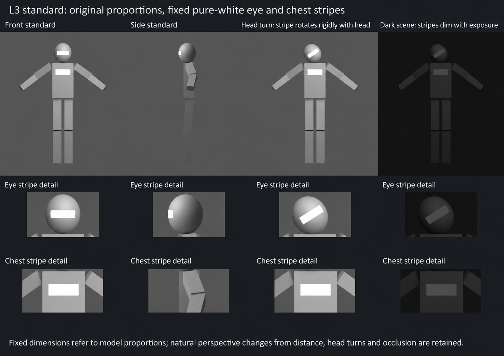

Live action to 3D: L3 with fixed white marks
Version: 2026-11-18. Characters now use the user-supplied L3. This package contains a workflow, models, and supporting checks; it does not convert arbitrary videos in one click.
What changed
- Use the actual geometry from L3_rigged_white_marks(6).blend in place of the old short, stocky V5. Preserve the original.
- Keep the original eye and chest stripes' shape, position, and dimensions. Use neutral pure white without a blue cast. A rigid binding layer prevents bone stretching from resizing the marks.
- Each actor has a fixed uniform scale. Do not scale the stripes separately or redraw them per frame. Preserve natural changes in apparent width caused by camera distance, head rotation, perspective, and occlusion.
- Retain dark-scene synchronization, running/contact checks, and camera/background verification. The previous corridor render has not been converted to L3; do not report it as updated.
Staff procedure
1. Extract the complete package. Read live-action-block-previs/SKILL.md and live-action-block-previs/references/l3-model.md first.
2. In Blender, append the entire L3_STANDARD collection from live-action-block-previs/assets/L3_standard_fixed_white_marks.blend. You can also open the template directly for inspection.
3. Set the actor root's uniform scale once. Change only body material slot 0 to the semantic role color; preserve white-mark slot 1. Duplicate the native controls and rigid binding armatures with the actor, and verify constraint targets.
4. Extract motion shot by shot using the source timing. Remap bone lengths and rest orientations to L3; do not reuse V5 lengths. Adjust motion, camera, and contact for each shot.
5. Run scripts/check_l3_model.py over the full frame range, then review at normal speed, slow motion, and frame by frame. Deliver against the checklist.
Do staff need plugins?
| Responsibility | Requirement |
| Extract motion from source footage | Install FlowHMR, its runtime, and models on the motion-capture workstation |
| Open/render L3, transform ordinary bones, edit scenes | Blender; each employee does not need FlowHMR or an additional retargeting plugin |
| Full native Rigify panels, IK/FK snapping, or another automatic retargeting route | Verify the relevant tool versions separately; full panels and snapping were not validated in this package |
| Review | Video player or browser |
The source contains an already generated rig. The production copy does not require automatic execution of embedded scripts. Opening the template does not automatically retarget new motion: motion output and L3 differ and still require mapping and correction. See live-action-block-previs/references/setup-and-roles.md.
Task text for production staff
Read the included live-action-block-previs/SKILL.md and use L3_STANDARD from assets/L3_standard_fixed_white_marks.blend to reconstruct the source footage. Preserve L3 body proportions and the original stripe geometry. Eye and chest stripes must be neutral white and must not resize independently or stretch with bones. Set one fixed uniform scale per actor and retain natural perspective. Extract motion by shot using source timing and correct it continuously within each shot. Darken the 3D scene in sync with lights going out in the footage. Align running and camera movement; check foot sliding and hand/wall contact. Deliver seamless stacked comparison, pure 3D video, editable project, frame review, and actual check records. Label inferred motion honestly.
File entry points
- live-action-block-previs/assets/L3_standard_fixed_white_marks.blend: production template.
- live-action-block-previs/assets/L3_original_user_model.blend: original supplied model.
- live-action-block-previs/assets/L3_front_standard.png and live-action-block-previs/assets/L3_side_standard.png: current appearance.
- live-action-block-previs/assets/L3_white_marks_stability_check.png: pose and stretching stress checks.
- live-action-block-previs/references/validation-l3.json: supplied validation results.
FlowHMR installers, large models, staff accounts, and source footage are not included. V5 history is for traceability and does not define current dimensions. Share the complete folder with production staff.
L3 model and fixed white marks
Current model standard
The user supplied L3_rigged_white_marks(6).blend to replace V5. live-action-block-previs/assets/L3_original_user_model.blend preserves the source geometry with English collection names. live-action-block-previs/assets/L3_standard_fixed_white_marks.blend is the production copy; it preserves the neutral geometry and stripe faces, changing only the neutral-white material and adding a rigid binding layer.
Append the entire Collection/L3_STANDARD collection in Blender. Appending just the mesh loses control/binding dependencies. Preview cameras/lights are in L3_PREVIEW and normally need not be appended for production. The neutral pose is the original A-pose.
The source has one body mesh, 578 vertices, 590 faces, and ten disconnected body parts. Seventeen faces use white material: one chest face and sixteen head faces. Use the source dimensions. Neutral height is approximately 2.422658 units; head width/height 0.35582/0.402426; torso width/height 0.429664/0.706853. A-pose width includes outstretched arms and is not shoulder width. Forward is -Y; up is +Z. Complete measurements are in live-action-block-previs/assets/model-profile.json.
Motion and proportions
- L3_SOURCE_RIG: retain the native 706-bone control rig and control shapes. Existing control bones support ordinary transformations without automatically executing embedded scripts or installing Rigify just to open, render, and edit bones. Full custom panels and IK/FK snapping were outside the package's validation scope; verify the appropriate Rigify version if needed.
- L3_RIGID_BIND: ten rigid bones copy only the corresponding native DEF bones' world position and rotation, excluding scale/shear. Each body part and its stripe share one bone, preventing controller stretch from changing their thickness. Preserve constraints, weights, and binding; do not add stretch or bind again to the original Rigify deformation layer.
- L3_ACTOR_ROOT: actor placement node. Use one fixed uniform overall scale, usually set at creation, then fit root position, camera, and bone rotation. Do not use nonuniform scale or scale animation on objects, bones, or ancestors. Duplicate the entire hierarchy and redirect constraints to that actor's own rig.
- FlowHMR and L3 rest skeletons differ. Rebuild correspondence, rest orientations, and bone lengths, then check head/shoulders and foot placement. Old V5 lengths such as 0.36/0.43/0.52 and actor scale 0.8 do not apply to L3.
Fixed stripe rules
Preserve the original seventeen white faces, vertices, and material slot 1. Do not add decals or screen-width-generated stripes. The eye stripe follows the head; the chest stripe follows the torso. Each shares its body's single rigid weight, fixing relative dimensions and position.
Use neutral-white Emission (1,1,1), strength 1, dimmed by global exposure. Do not increase emission to compensate for darkness. Change semantic body color only in slot 0; do not overwrite the stripes by replacing all mesh materials.
Stable size means stable model-space dimensions and relative proportions. Camera distance, foreshortening, head turns, occlusion, and antialiasing naturally alter apparent stripe width. Do not counter-scale stripes to lock their screen-pixel width.
Checks and helper scripts
Run in a separate Blender background process, with the skill directory as the working directory:
blender --background --disable-autoexec --python scripts/create_mannequin.py -- --output new_L3_project.blend
blender --background --disable-autoexec --python scripts/check_l3_model.py -- --input project.blend --report L3_check.jsonThe template script creates a new project from the supplied L3 and refuses overwrites. The checker inspects rigid dimensions, fixed uniform root scale, seventeen white faces, and white material throughout the frame range. Passing it does not validate source motion. Review actual head turns/running at normal speed and frame by frame.
Included source-model comparisons and rotation/stretch stress checks verify binding stability. They are not a corridor-film render using L3. Earlier corridor footage still uses the old model and needs separate retargeting and rendering.
Software, plugins, and staff roles
Environment reported by the source package
FlowHMR-Windows 0.3.6; Windows; RTX 4060 8 GB; CUDA 12.1; Blender 5.2.3 LTS. These are the package author's reported test versions, not a guarantee for other versions or a new verification of those claims.
FlowHMR and its models estimate motion. Blender handles ten-part characters, cameras, scenes, animation editing, and rendering. FlowHMR's body proportions differ from this mannequin, so exported motion still requires retargeting and image-space correction.
Motion-capture workstation
1. Obtain the complete portable package from the maintainer's FlowHMR-Windows releases. This workflow was written for 0.3.6. Extract and launch FlowHMR.exe.
2. Choose the GPU backend in the Runtime panel. The source package's version-specific instructions list CUDA 12.1 for RTX 30/40 and CUDA 12.8 for RTX 50. Follow the relevant release's instructions for other hardware. The portable package includes base Python; staff need not first assemble another Python environment.
3. Confirm base models in the Models panel. Obtain public models through the software's documented sources. Import account-gated models such as SMPL+H from packages acquired through an authorized personal/company account. Existing third-party models on one computer are not automatically authorized for redistribution.
4. Test recognition, generation, export, and Blender import on a short clip first. Initial model loading can be slow; a still-loading interface is not evidence of completed generation.
The supplied guide reports 0.3.6 minimums of Windows 10/11 64-bit, 16 GB RAM, and a dedicated 6 GB GPU, with 32 GB RAM and 8+ GB VRAM recommended. It reports a trial on a 4060 8 GB. CPU support has different performance. These remain historical package statements rather than current hardware advice.
Are the original Blender plugins required?
The documented route is FlowHMR output -> continuous correction -> L3 native rig and fixed-proportion rigid binding. The reported trials used no extra Blender retargeting plugin.
| Original archive | Purpose / limit | Used in reported trials? |
| FlowHMR_Rigify_Retarget_v0.1.0.zip | Rigify retargeting; verify plugin/Blender compatibility separately | No |
| FlowHMR_2_MMR_v1.3.1.zip | MMR route; not automatically the ten-part mannequin route | No |
| MikuMikuRig-5.2.2.zip | MMD/MMR workflow; does not infer motion from source video | No |
Staff using this mannequin do not need every archive simply for completeness. For another rig/manual plugin route, select tools for the target skeleton. This package did not validate those plugins against its reported Blender 5.2.3 environment.
Helper scripts
Run template and mark-repair scripts with Blender's Python; a separate bpy installation is unnecessary. Run in a new background process after replacing example paths:
& 'C:\path\to\blender.exe' --background --disable-autoexec --python 'package\live-action-block-previs\scripts\apply_white_marks.py' -- --input 'original.blend' --output 'new_project_white_marks.blend'Output must be a new path. Scripts refuse to overwrite existing files. Mark repair recognizes this template's integrated materials, not arbitrary characters. Expect WHITE_MARKS_SAVED, then reopen the result. It preserves motion, camera, proportions, and lights and does not rerender the video.
To create an independent project from the supplied L3:
& 'C:\path\to\blender.exe' --background --disable-autoexec --python 'package\live-action-block-previs\scripts\create_mannequin.py' -- --output 'new_template.blend'A generated template is already included and can normally be appended directly. Helper scripts do not generate motion from video.
L3 template scope
The production template includes native controls and fixed stripe binding. Opening, rendering, and ordinary bone transformations need no extra retargeting plugin. Install FlowHMR only on the capture workstation. Complete automatic retargeting of new motion is not included. Verify native Rigify panels/snapping against compatible versions when needed. Opening a template does not automatically align arbitrary FBX.
FlowHMR to fixed-proportion ten-part mannequins
This workflow combines experience from two reported trials of motion capture, continuous correction, ten-part mannequins, rendering, and delivery. Strict camera/actor reconstruction still requires shot-specific adjustment. Distinguish software output, later corrections, and unresolved issues.
1. Inventory footage and split shots
Record dimensions, frame rate/count, source PTS, audio, and color. Source numbering begins at 1. The shot table includes start/end frames, principal/supporting roles, entrances/occlusions, visible joints, contact events, background anchors, and primary light direction.
Distinguish real cuts from light flicker. Darkness does not automatically mean a cut; sudden optical flow may reflect a flash or fast camera motion. Inspect neighboring frames. Generate/fit shots separately and never smooth across cuts.
Preserve the source. Brightened copies assist detection only; the comparison's upper half must use the original review reference. Preserve aspect ratio when resizing and record coordinate transforms between detected joints and original images.
2. Extract motion
Import each shot into FlowHMR and verify identities and track ranges, including missed detections at the beginning/end. Save parameters, person IDs, selected frame ranges, and original NPZ/FBX. Align multiple people's relative positions jointly.
The reported trial started with 30 steps, seed 0, cfg 1, short-time smoothing around 0.55 internal frames, SAM batch size 2, and per-frame hands. Disable HaMeR because ten-part bodies have no fingers. These are trial starting settings, not universally optimal parameters. Internal motion uses 30 fps; resample other source rates by time rather than attaching frame numbers directly.
Choose camera settings per shot. Truly static shots may use a fixed camera; evaluate moving-camera output for clear pan/tilt/translation, then verify against backgrounds independently. An early corridor trial used fixed-camera capture plus approximate later camera adjustment, which was insufficient. Architectural constraints and translation improved the revision, but close-ups and dark regions still contained inference; it was not an exact camera solution.
Apply contact postprocessing according to action. Standing/walking may benefit from foot correction; do not force jumps/airborne motion onto flat ground. Compare before/after rather than enabling every available option.
3. Observations and reliability
Keep source head/neck, shoulder, elbow, wrist, hip, knee, and ankle observations. Use estimated 3D motion as a direction/depth reference. Record visible, occluded, offscreen, very dark, and missed states. Detections can be wrong; small fitting residuals do not prove accurate motion.
In dark footage, check whether brightening reveals actual contours. Short gaps can use stable motion on either side within the shot. Label long gaps and extrapolated boundaries as inferred. Previously, simply extending nearby poses caused freezing. Check velocities, stable intervals, and visible contours rather than treating a frozen pose as successful stabilization.
4. Retargeting and continuous stabilization
Append all of L3_STANDARD and remap lengths to L3's rest skeleton. Use one fixed uniform root scale per identity across the clip. Do not alter bone lengths per frame to hide residuals. Fit root, torso facing, head direction, then limbs; inspect head and torso separately.
Solve the full trajectory jointly using fixed lengths, source projection, motion-depth references, and acceleration constraints. Keep quaternion signs, elbow/knee branches, and limb cross-section orientation continuous. Repair local rotational outliers using stable neighboring frames and recheck transitions. Avoid independent-frame fitting followed by heavy global smoothing.
Compare quick hand raises, head turns, and jump timing before/after filtering to prevent slowdown. Verify velocity spikes against the source before treating them as errors. Noisy occluded wrist observations must not forcibly drag elbows.
Running needs separate review
Mark each foot's source-frame support, liftoff, and airborne intervals. Check ground contact, root travel, pelvis bounce, stride, and arm swing. A support foot should remain stable in world space during contact rather than merely chase screen coordinates. Lock the camera to background evidence before jointly solving camera and actor movement.
For sliding/floating, inspect scale, floor placement, depth, and contact timing first. Lowering the floor to reveal legs only repairs occlusion; it does not establish correct gait/contact. Recheck the full clip after floor changes and preserve jump trajectories.
5. Independently reconstruct camera and scene
Constrain the camera with static anchors, vanishing points, doorframes, wall lines, and tiles. Exclude actors and shadows that move with them. Optical flow is initialization evidence; downweight flicker, occlusions, and low texture.
Check rotation, translation, forward/back movement, focal changes, and roll. A 2D translation/rotation fit cannot recover tracking/dolly parallax. Build simplified geometry supporting perspective and contact before matching background corner tracks. Validate the camera before correcting actor roots; do not cancel camera errors with opposite actor movement.
Prioritize shot starts/ends, doorframes crossing the image, actor/wall distances, floor vanishing points, and near/far scale changes. Bone fitting error alone cannot establish success with a misaligned camera.
6. Lighting, darkness, and pure-white stripes
Match source primary-light direction and approximate background colors. Eye/chest stripes are neutral white (255,255,255), superseding old cyan marks. The template uses neutral emission strength 1 to avoid blue environmental tint without adding lights. When footage darkens, darken stripes, people, and background together through global exposure/scene lighting.
Do not derive exposure only from an actor box; movement, clothing, and changing background proportions contaminate it. Select stable wall/background regions per shot, compare source/render luminance curves, and verify exact darkening/recovery timing and depth frame by frame. Then check actors. Do not normalize black references into bright scenes. Treat visible fixtures according to the footage rather than turning every light off mechanically.
Render bright, darkest, and recovery moments first; compare RGB neutrality and brightness. Pure white means no color cast, not outputting 255 in every dark frame. This rule supersedes older stripe reference colors.
7. Review and revision
Preview the whole clip inexpensively, with synchronized source-above/previs-below and transparent overlay at matching frame rate and display aspect ratio. Review normal speed, slow motion, and continuous thumbnails; enlarge suspect frames.
Record object, source range, issue, change, and preserved elements. Validate motion, camera, and darkness separately. Technical checks aid diagnosis rather than replace visual review. Historical corridor revisions still had hand/wall contact, foot sliding, and close-camera errors. Changing this package to L3 does not rerender old footage and cannot be reported as doing so.
8. Delivery and checks
- Complete standalone 3D and seamless stacked comparison; preserve source audio and add no video labels.
- Frame-switching/overlay/slow-play HTML with all required images/media.
- Editable Blender project and dependencies, character/shot tables, actual parameters, and correction records.
- Fully decode the output to verify frame count, frame rate, audiovisual mapping, and audio. Reopen Blender in a fresh process to inspect cuts, the second half, and final frame.
- Check each L3 mesh's ten parts, native controls, ten-bone rigid bind, fixed proportions/stripes, and joint connections. Separately inspect temporal rotation/translation jumps, contacts, and intersections.
- State actual review coverage and unresolved issues. Claim reproducibility only after a real rerun in a new directory. This staff package supplies steps, templates, and helpers, not arbitrary-video-to-exact-reconstruction automation.
See also standards.md, model-and-palette.md, and acceptance-and-delivery.md. Current model/stripe details are in l3-model.md. Run check_l3_model.py after retargeting, then review stripe perspective and motion; head/chest stripe geometry and weights remain fixed.
Current model checks

The supplied report records a 60-frame rotation/stretch stress check. It checks rigid dimensions, not arbitrary motion contact, neck connections, or source reconstruction. Full record: validation-l3.json.